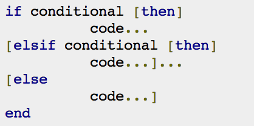
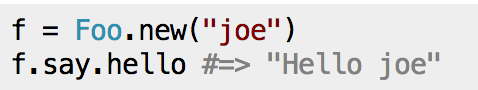
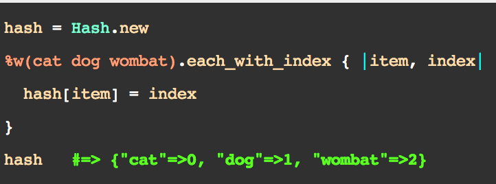

This is my Ruby cheat sheet for DBC Phase 0. I'm also testing out 'Layitout!' and Bootstrap 3.0
Ruby doesn't need those pesky semicolons that C and Java require. But remember to indent properly all the time! Also ruby uses the word 'end' to tell when methods and conditionals are over. Example: 
Ruby uses the handy dot syntax to call methods and access data on objects. Methods can be stacked up! Example from stack overflow: 
Enumerables are where Ruby really gets magical. They work on collections of items and provide searching, sorting, and so much more. Remember to use them for things like .include? Looping with .each_with_index. Always remember to use the ruby-docs page for quick reference: Enumerables 